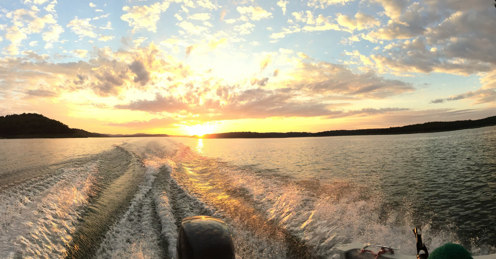

Current Projects
Over the past few months I have taken a deep dive into the world of machine learning. Since computer programming wasn’t heavily covered in my coursework I have engaged in a multitude of online courses and self-study projects to be able to increase my skillset in the field and ultimately to pursue a career in the realm of data science. Machine learning and AI have become my favorite area of research and as such I have taken up some projects to help me better learn ML and to come up with novel applications that can benefit the world. Lately I have been generating machine learnign algorithms from scratch and comparing them to Scikit-learn algorithms using large data from various datasets. I am covering linear regression, k-nearest neighbors, support vector machines, and neural networks with TensorFlow.
I have also built two simple web applications that deal with image classification using TensorFlow.js and transfer learning. You can see this first one here has been modified to take in webcam feed instead of uploading images. And the second one here which modifies it even further to use the model to classify up to three images yourself (whatever you hold in front of the webcam) by clicking one of the three buttons. Then when you hold the object back in front of the webcam it will tell you the likelyhood that the object is one of the three items (A, B, or C).
My goal is to try to do a simple ML project each week along with continuing to work on coding challenges. Feel free to check out my GitHub profile to see my most recent work.

About Me
I am constantly in pursuit of knowledge. I'm happy as long as as I never stop learning. My second most notable feature is that I'm diligent about getting to the root of issues and doing things the right way. I don't consider myself to fully master A concept until I grasp the underlying principle of it. This has led me to excel in a wide range of STEM subjects without having to limit myself to one narrow field.
My goal in life is to be a producer instead of a consumer. I want to use my STEM field knowledge to create solutions and deliver these solutions to the world so as to advance society as much as possible. I know that a strong work ethic along with an advanced skillset will go a long way, but communication and teamwork are a very vital component to being successful and contributing to society. For this reason, I not only engage in self-study for science related disciplines, but also for being a better communicator and colleague.
Home Life
When I'm not working on projects or researching the latest biotechnology & science news then I enjoy listening to podcasts and reading in the areas of, you guessed it...biotechnology and the latest science news. My health, both mental and physical, is my number one priority so I work hard to stay active as much as possible. When I'm not working out or reading or studying online then I spend most of the time outside usually in the woods. Any chance I get I'm out hunting public lands either in the Ozark mountains where I grew up, or out west with my sister in Idaho.
Feel free to hop over to my Goodreads profile to get an idea of my reading interests and book recomendations. And don't forget to check back in here as I'll be adding more features and functionality to keep you up to date on my projects which should get pretty interesting.